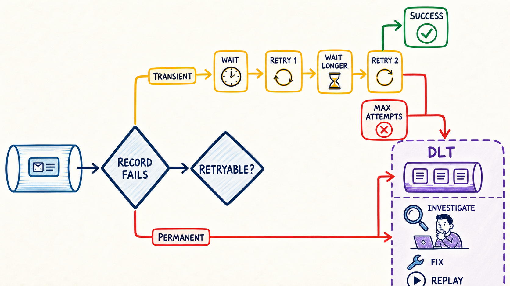

Classify
Phân biệt lỗi tạm thời, vĩnh viễn, deserialize và lỗi JVM.
Retry không phải “cứ thất bại thì chạy lại”. Bạn sẽ học cách phân loại lỗi, giới hạn số lần delivery, tính backoff, chọn blocking/non-blocking và biến DLT thành quy trình recovery có bằng chứng.
Phân biệt lỗi tạm thời, vĩnh viễn, deserialize và lỗi JVM.
Tính đúng tổng delivery, delay và thời gian chờ cộng dồn.
Biết lúc nào dùng blocking retry hoặc retry topics.
DLT giữ evidence; replay chỉ sau khi sửa nguyên nhân.

Timeout, downstream 503, lock tạm thời: có thể biến mất sau một khoảng chờ.
Vi phạm rule, dữ liệu thiếu bắt buộc: cùng input thường vẫn fail.
Không deserialize được: mặc định Spring Kafka xếp nhiều lỗi conversion vào fatal/not-retryable.
Chọn exception để xem quyết định mặc định/được cấu hình. Sau đó thử tự nói lý do trước khi đọc kết quả.
Downstream có thể hồi phục sau vài giây.
Thử lại vài lần; hết ngân sách thì recover/DLT.
DefaultErrorHandler retry hầu hết RuntimeException, trừ nhóm fatal như DeserializationException, conversion, argument resolution, NoSuchMethodException, ClassCastException. Hãy thêm business exception không retry được bằng cấu hình rõ ràng.new FixedBackOff(1000, 2) nghĩa là chờ 1 giây và retry tối đa 2 lần—tổng cộng 3 deliveries gồm lần đầu.
Tổng delivery tối đa là bao nhiêu? Record thành công hay sang DLT?
Delay trước retry thứ n: min(initial × multiplier^(n−1), maxDelay).
| Retry | Chờ trước lần này | Thời gian cộng dồn |
|---|
max.poll.interval.ms. Spring cung cấp ContainerPausingBackOffHandler; retry topic thường hợp hơn khi delay dài và muốn main consumer tiếp tục.| Blocking retry | Non-blocking retry topics | |
|---|---|---|
| Record ở đâu? | Được resubmit/seek trong listener container. | Được publish sang topic retry và consumer khác xử lý sau. |
| Ảnh hưởng luồng chính | Partition/consumer thread liên quan chờ trong retry window. | Main consumer tiếp tục; đổi lại ordering tương đối có thể thay đổi. |
| Delay phù hợp | Thường ngắn, ít lần. | Phù hợp delay dài hơn và cần tách tải. |
| Giới hạn | Cần cân nhắc poll interval và transaction mode. | Không hỗ trợ batch listener; không kết hợp container transactions. |
Chọn loại lỗi. Với deserialization failure, recoverer có thể khôi phục raw byte[]; producer DLT phải có serializer phù hợp.
<originalTopic>-dlt, cùng partitionTopic DLT phải có ít nhất số partition bằng source nếu giữ nguyên partition. Header chuẩn giữ original topic/partition/offset/group và exception context.
Mục tiêu là hiểu policy như dữ liệu: quyết định, retries và delay. Hãy tự điền TODO.
public enum FailureDecision {
RETRY, SEND_TO_DLT, STOP_PROCESS
}public final class FailureClassifier {
public FailureDecision classify(Throwable failure) {
// TODO 1: Error -> STOP_PROCESS
// TODO 2: DeserializationFailure hoặc InvalidOrder -> SEND_TO_DLT
// TODO 3: DownstreamUnavailable -> RETRY
// TODO 4: quyết định fallback có chủ đích
}
}public record RetryPolicy(long initialMs, double multiplier,
long maxMs, int maxRetries) {
public long delayBeforeRetry(int retryNumber) {
// TODO: retryNumber bắt đầu từ 1
// TODO: initial * multiplier^(retryNumber - 1)
// TODO: cap ở maxMs và kiểm soát overflow
}
public int maxDeliveries() {
// TODO: lần đầu + số retries
}
}@Test void twoRetriesMeansThreeDeliveries() { // TODO }
@Test void delaysAre1000_2000_4000() { // TODO }
@Test void delayNeverExceedsMax() { // TODO }
@Test void invalidOrderGoesStraightToDlt() { // TODO }
@Test void errorStopsProcess() { // TODO }Input: transient failure, 3 retries, delay 500ms ×2, max 1500ms. Kết quả mong đợi: 4 deliveries; waits 500, 1000, 1500.
orders.retry.lab và orders.retry.lab-dlt, cùng 3 partitions. Tắt auto-create trong production và quản lý topic bằng IaC/admin.
final class DownstreamUnavailableException extends RuntimeException { }
final class NonRetryableBusinessException extends RuntimeException { }Không ném một RuntimeException chung cho mọi lỗi; classifier cần type/cause rõ.
@Bean
DefaultErrorHandler kafkaErrorHandler(KafkaTemplate<Object, Object> template) {
var recoverer = new DeadLetterPublishingRecoverer(
template,
(record, failure) -> new TopicPartition(
record.topic() + "-dlt", record.partition()));
// 2 retries + original delivery = 3 deliveries total
var handler = new DefaultErrorHandler(
recoverer, new FixedBackOff(1_000L, 2L));
handler.addNotRetryableExceptions(
NonRetryableBusinessException.class);
// TODO: đăng ký RetryListener để log attempt/recovered/recoveryFailed
return handler;
}@KafkaListener(topics = "orders.retry.lab", groupId = "orders-retry-v1")
void consume(ConsumerRecord<String, OrderEvent> record) {
// TODO: event invalid -> NonRetryableBusinessException
// TODO: downstream 503/timeout -> DownstreamUnavailableException
orderService.apply(record.value());
}@Bean
ConcurrentKafkaListenerContainerFactory<String, OrderEvent> factory(
ConsumerFactory<String, OrderEvent> consumerFactory,
DefaultErrorHandler kafkaErrorHandler) {
var factory = new ConcurrentKafkaListenerContainerFactory<String, OrderEvent>();
factory.setConsumerFactory(consumerFactory);
factory.setCommonErrorHandler(kafkaErrorHandler);
factory.getContainerProperties().setDeliveryAttemptHeader(true);
return factory;
}Poison pill fail trước listener. Dùng cấu hình Module 6 để error handler nhận failed record/raw bytes; DLT producer cần hỗ trợ cả object bình thường và byte[].
@RetryableTopic(
attempts = "4", // original + 3 retries
backoff = @Backoff(delay = 1_000, multiplier = 2.0, maxDelay = 10_000),
include = DownstreamUnavailableException.class,
exclude = NonRetryableBusinessException.class,
autoCreateTopics = "false")
@KafkaListener(topics = "orders.retry.topic.lab", groupId = "orders-topic-retry-v1")
void consumeWithRetryTopic(OrderEvent event) {
orderService.apply(event);
}
@DltHandler
void onDlt(OrderEvent event,
@Header(KafkaHeaders.RECEIVED_TOPIC) String dltTopic) {
// TODO: lưu incident/evidence; không replay tự động
}Đây là topology khác: framework tạo consumer cho retry/DLT topics. Không ghép non-blocking retries với batch listener hoặc container transactions.
Gửi evt-ok-1; listener xử lý một lần, không có DLT record.
Stub downstream trả 503 hai lần rồi 200. Mong đợi: attempts 1–2 fail, wait 1s, attempt 3 success, không DLT.
Stub luôn 503. Mong đợi: 3 deliveries với FixedBackOff(1000,2), sau đó DLT một record.
Gửi amount âm và ném NonRetryableBusinessException. Mong đợi: một delivery rồi DLT, không đợi 2 giây vô ích.
Gửi malformed JSON. Mong đợi: listener business không được gọi; DLT giữ raw bytes và deserialization exception headers.
Gửi event tốt ngay sau record lỗi. Sau recovery, consumer phải tiếp tục; nếu đứng ở offset lỗi thì recoverer/DLT publish có thể đang fail.
Sửa nguyên nhân, copy record vào topic replay riêng hoặc main topic theo runbook; gắn correlation/original metadata và dùng idempotent consumer.
delivery_attempts, retry rate, recovered count, recovery failures, DLT depth/age, replay success và consumer lag.
topic, partition, offset, group, eventId, payload version.
exception cause, delivery attempt, service build, downstream status.
DLT publish result, incident owner, fix, replay id và outcome.
FixedBackOff(1000, 2) có bao nhiêu deliveries?<originalTopic>-dlt, mặc định cùng partition; DLT phải có đủ partition.Error như OutOfMemoryError?DefaultErrorHandler xử lý RuntimeException; JVM Error có thể làm container/consumer dừng và cần xử lý ở mức vận hành, không phải business retry.Giải thích decision tree: transient, permanent, poison pill, Error; sau đó so sánh blocking và retry topic.
@RetryableTopic, @DltHandler, attempts và infrastructure.